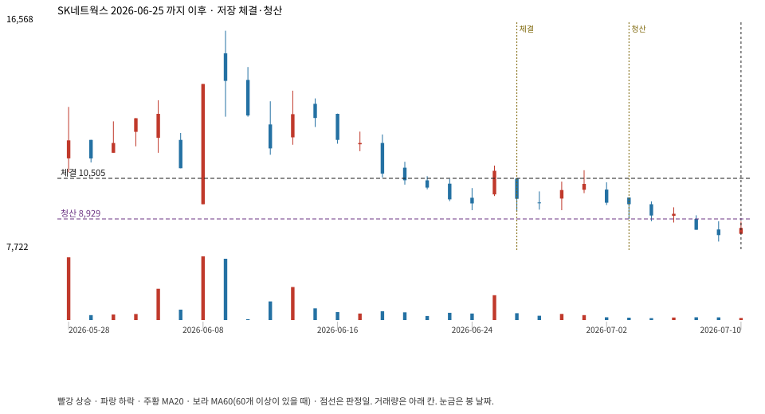

계좌를 다시 돌리지 않았다. 아래는 저장된 주문·체결·청산·비용·손익이다.

{
"case_id": "f4e8d714445d1a18",
"status": "closed",
"trade": {
"symbol": "001740.KS",
"signal_date": "2026-06-25",
"quantity": 576,
"entry": 10800,
"stop": 8933,
"target": 16240,
"planned_risk": 1089328.3392959991,
"reserved_cash": 6227020.799999999,
"fill": {
"date": "2026-06-26",
"price": 10505.25,
"fee": 6051.024
},
"exit": {
"date": "2026-07-03",
"price": 8928.5335,
"reason": "stop",
"net_pnl": -919382.5632959995,
"ambiguous_bar": false
}
},
"cost": "research fee 10bp each side, slippage 5bp; amounts below are the stored ledger, not a new run",
"chart": "c\/f4e8d714445d1a18.svg"
}